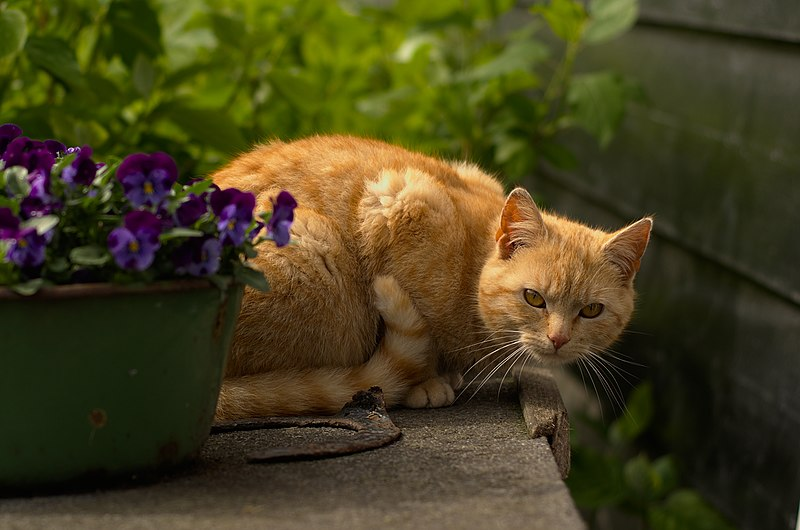
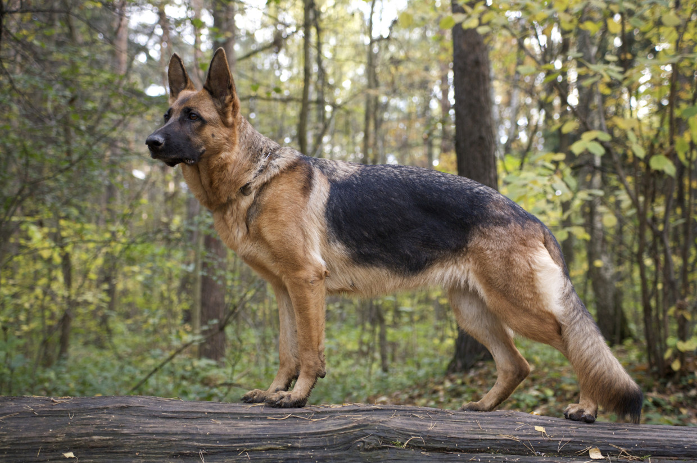
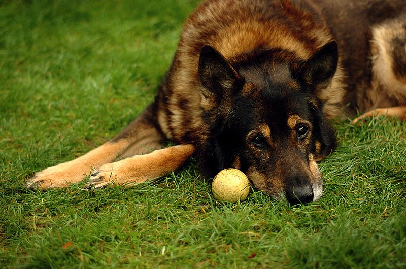

Bienvenu chez Félins, Canins et Copains
Sur notre site, découvrez la vie captivante de nos adorables compagnons : deux chats fascinants et deux chiens irrésistibles. Chacun a sa personnalité, ses petites habitudes et son charme unique. Ces quatre amis à poils sont là pour vous faire sourire, vous inspirer et vous accompagner dans votre quotidien avec vos propres animaux.
Bertrand, le félin aventurier, est un explorateur dans l’âme. Toujours en quête de nouveaux horizons, il bondit de cachette en cachette avec une agilité impressionnante. Majestueux mais câlin, Bertrand vous montre comment offrir à un chat un environnement riche en découvertes tout en préservant ses moments de confort.

Gertrude, sa complice malicieuse, incarne la douceur et l’espièglerie. Experte en câlins et en petites farces, elle a le don de rendre chaque instant spécial. Ses aventures simples mais pleines de charme rappellent qu’avec un chat, chaque jour est une surprise.
Côté canins, Coquelicot, l’énergique exploratrice, est une chienne qui déborde de joie de vivre. Toujours partante pour une promenade ou une partie de jeu, elle vous entraîne dans son univers où la curiosité et l’enthousiasme sont maîtres mots. Sa soif d’aventure inspire tous les amoureux des chiens à passer du temps actif et complice avec leurs compagnons.
Enfin, Alphonse, le sage et tranquille, est le parfait équilibre. Amateur de siestes paisibles et de moments de tendresse, il incarne la sérénité. Mais attention, sous ses airs calmes se cache un partenaire de jeu enthousiaste, prêt à suivre Coquelicot dans ses escapades.
À travers leurs histoires, leurs conseils, et leurs anecdotes, Bertrand, Gertrude, Coquelicot et Alphonse vous invitent à plonger dans leur monde et à enrichir la relation avec vos propres animaux. Parcourez leurs pages dédiées pour mieux les connaître et laissez-vous inspirer par leur complicité et leur joie de vivre.